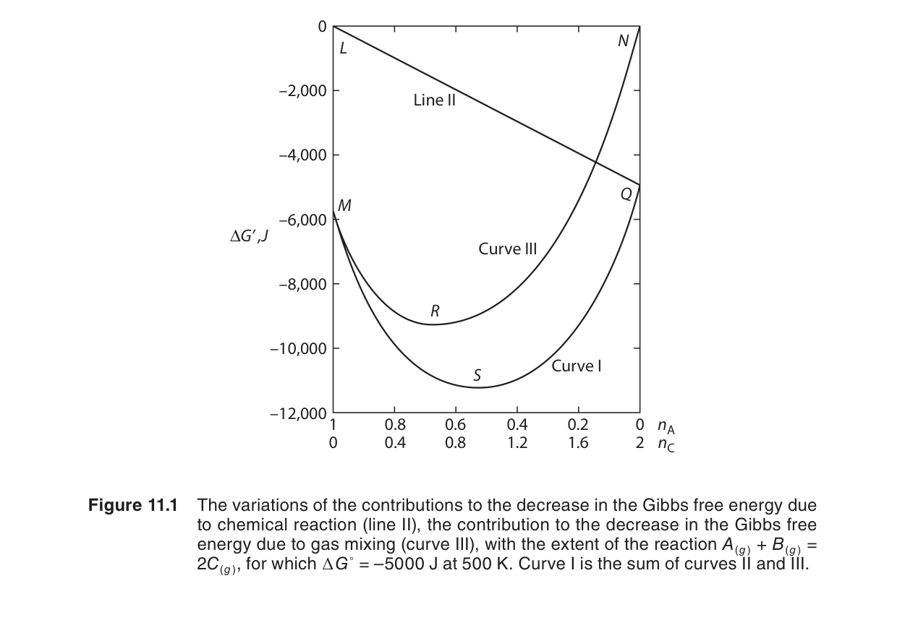
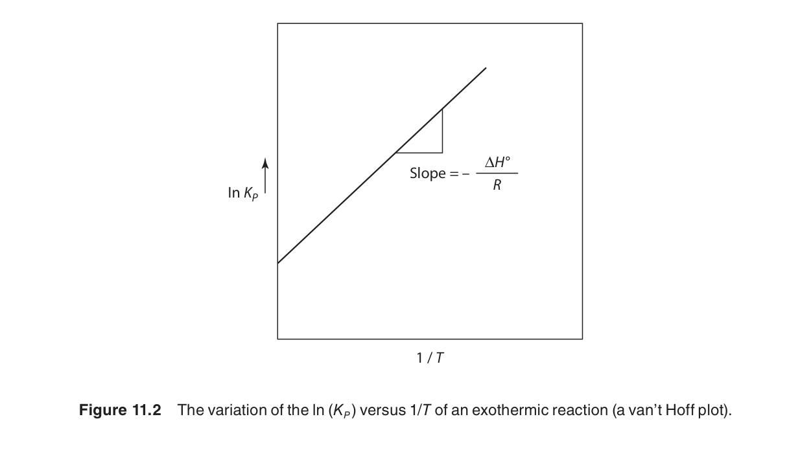
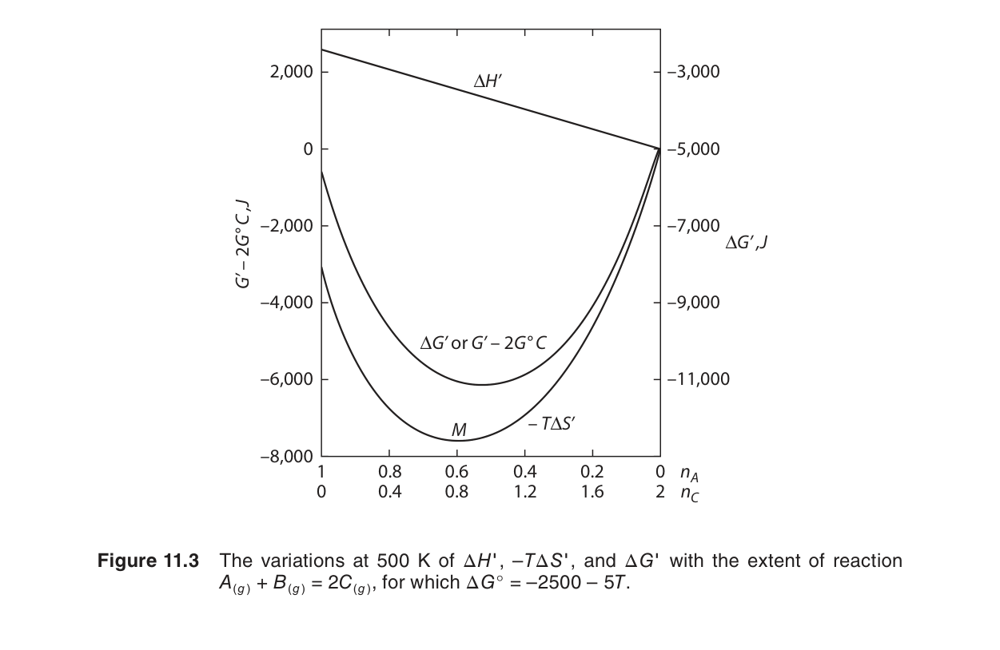
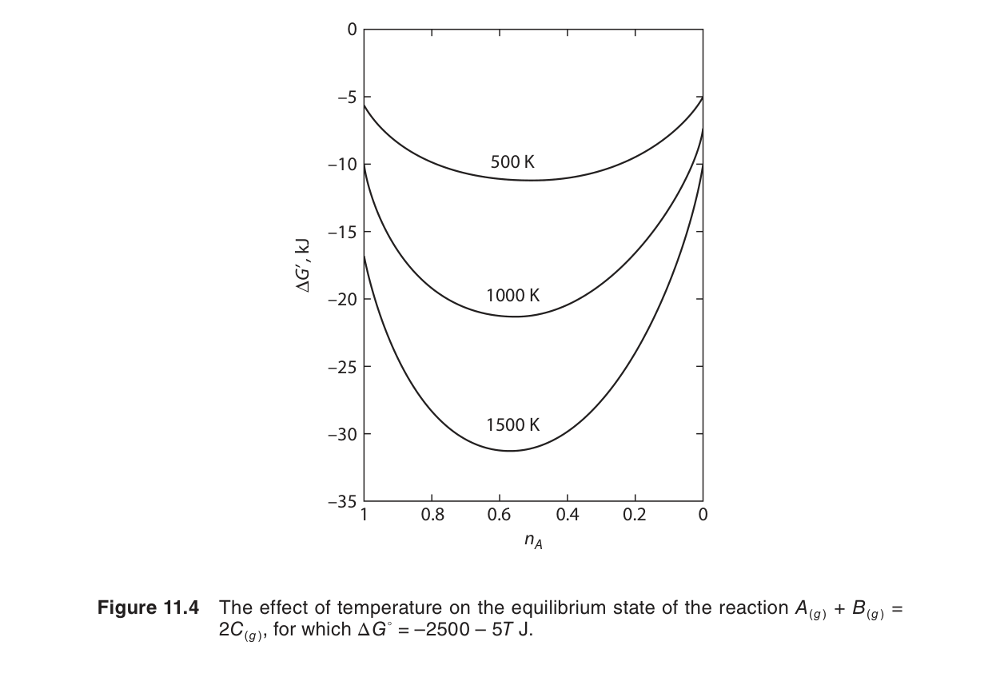
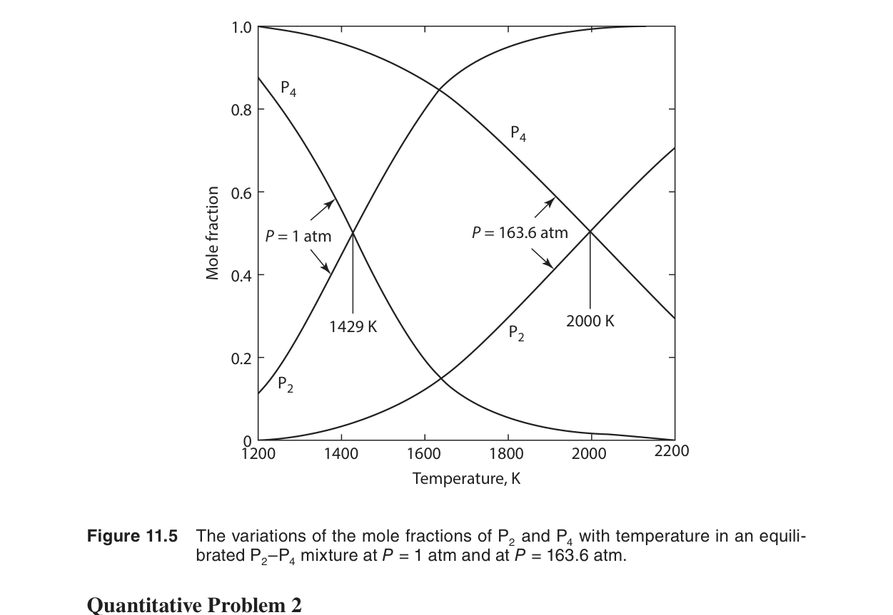

涉及氣體的反應
前六章建立了完整的熱力學工具包——從第一定律到 Maxwell 關係、從 $C_P$ 積分到第三定律絕對熵。第十一章將這些工具應用於熱力學最核心的實際問題：化學反應平衡。本章聚焦於氣相反應，核心公式 $\Delta G^\circ = -RT\ln K$ 是化學熱力學中最重要的單一方程式——它將熱力學數據表（$\Delta H^\circ$、$S^\circ$）與實際的化學反應產率和操作條件連接起來。
在本章中，我們將學習：
- 平衡常數的定義：$K_P$（以壓力）、$K_f$（以逸壓）——以及為什麼高壓下必須使用後者
- $\Delta G^\circ = -RT\ln K$——連接熱力學數據與化學平衡的橋樑
- van't Hoff 方程式——$K$ 的溫度依賴，以及它如何反映 $\Delta H^\circ$
- Le Chatelier 原理的定量形式——壓力、惰性氣體對平衡組成的影響
- 典型工業反應的熱力學分析：SO₂ 氧化、水煤氣反應、H₂/CO 混合物
11.1 導論（Introduction）
化學反應平衡是熱力學第二定律最華麗的應用之一。對於一個氣相反應 $aA + bB \rightleftharpoons cC + dD$，平衡不是靜止的——正向和反向反應仍然在微觀尺度持續進行，但速率相等，因此宏觀組成不再變化。熱力學告訴我們這個平衡組成是什麼，而不需要知道反應的動力學細節。
反應平衡的驅動力是吉布斯自由能的極小化。在定溫定壓下，反應會自發進行直到系統的 $G$ 達到最小值——此時 $\Delta G = 0$。$\Delta G$ 可以分解為標準反應自由能（$\Delta G^\circ$——只取決於反應物和產物的本質）和組成相關項（$RT\ln Q$——取決於實際分壓）：
從 ΔG 推導平衡條件
考慮一般氣相反應 $aA + bB \rightleftharpoons cC + dD$。對於每種氣體 $i$，其化學勢 $\mu_i$ 表達為：
其中 $\mu_i^\circ$ 是標準化學勢（$P_i = P^\circ = 1$ bar 時的化學勢）。反應的總吉布斯自由能變化為：
將反應商數定義為 $Q_P \equiv \prod_i (P_i/P^\circ)^{\nu_i}$，上式簡化為：
平衡條件：當 $\Delta G = 0$，反應商數 $Q_P$ 等於平衡常數 $K_P$。因此：
這是化學熱力學中最重要的關係式。它將可由熱力學數據表計算的 $\Delta G^\circ$ 與可直接測量的平衡常數 $K$ 聯繫起來。

從 Gibbs–Helmholtz 到 van't Hoff——跨章節預覽
第五章導出了 Gibbs–Helmholtz 方程式：
將其應用於 $\Delta G^\circ/T$ 與 $\Delta H^\circ$，我們將在第 11.3 節推導出 van't Hoff 方程式。這是將溫度依賴性納入平衡分析的關鍵橋樑。
11.2 反應平衡與平衡常數
對於氣相反應 $aA + bB \rightleftharpoons cC + dD$，以分壓表示的平衡常數為：
$P^\circ = 1\ \text{bar}$（或 1 atm，取決於標準態選擇）使 $K_P$ 成為無因次量。核心關係：
這條方程式的重要性再怎麼強調都不過分。給定 $\Delta G^\circ$，你可以計算 $K$。$\Delta G^\circ$ 本身可從標準生成自由能計算：
或者從 $\Delta H^\circ$ 和 $\Delta S^\circ$ 計算（使用第六章的方法）：
其中 $\Delta H^\circ(T)$ 通過 Kirchhoff 定律（第六章）從 298 K 的值積分得到，$\Delta S^\circ(T)$ 通過第三定律積分（第六章）得到。
$K_P$ 與 $K_f$——逸壓修正的完整推導
在高壓下，真實氣體的行為偏離理想氣體狀態方程式。化學勢的正確表達使用逸壓 $f_i$（第八章）：
其中 $f_i = \phi_i P_i$，$\phi_i$ 為逸壓係數（fugacity coefficient）。代入 $\Delta G$ 的表達式：
在平衡時 $\Delta G = 0$，定義熱力學平衡常數 $K_f$：
$K_f$ 是真正的熱力學平衡常數——它只取決於溫度，與壓力無關。將 $f_i = \phi_i P_i$ 代入：
其中 $K_\phi \equiv \prod_i \phi_i^{\nu_i}$ 是逸壓係數的乘積。在理想氣體極限（$P \to 0$）下，$\phi_i \to 1$，因此 $K_\phi \to 1$ 且 $K_f \to K_P$。
逸壓係數 $\phi_i$ 可從對比狀態原理（第八章）或實驗數據獲得。對於常見氣體混合物，可使用 Lewis–Randall 規則近似：$\phi_i(T, P) \approx \phi_i^{\text{pure}}(T, P)$。
$K_P$ 與總壓的關係——$K = K_P P^{\Delta\nu}$
將分壓 $P_i = y_i P$（$y_i$ 為莫耳分率，$P$ 為總壓）代入 $K_P$ 的定義：
定義 $\Delta\nu \equiv \sum_i \nu_i$（產物係數和減反應物係數和），則：
其中 $K_y \equiv \prod_i y_i^{\nu_i}$。這個關係在分析壓力對平衡組成的影響時至關重要——我們將在 11.4 節中利用它定量討論 Le Chatelier 原理。
11.3 溫度對平衡常數的影響——van't Hoff 方程式
van't Hoff 方程式的完整推導
從 Gibbs–Helmholtz 方程式出發（參見第五章）：
將其應用於反應的標準狀態：
由 $\Delta G^\circ = -RT\ln K$，兩邊除以 $T$：
對 $T$ 求導：
代入 Gibbs–Helmholtz 結果：
整理即得van't Hoff 方程式：
這個推導說明了 van't Hoff 方程式實際上是 Gibbs–Helmholtz 關係式的直接推論。

van't Hoff 方程式的物理意義極其清晰：
- 吸熱反應（$\Delta H^\circ > 0$）：$d\ln K/dT > 0$——升溫使 $K$ 增大。高溫有利於產物。
- 放熱反應（$\Delta H^\circ < 0$）：$d\ln K/dT < 0$——升溫使 $K$ 減小。低溫有利於產物。
積分形式與應用
情況一：$\Delta H^\circ$ 為常數（或溫度範圍小，$\Delta C_P \approx 0$）
直接積分 van't Hoff 方程式：
這與 Clausius–Clapeyron 方程式（第七章）的數學形式完全相同——不是巧合，而是因為蒸氣壓也是平衡常數的一種形式（液–氣平衡）。
情況二：$\Delta H^\circ$ 隨溫度變化——使用 Kirchhoff 定律
首先通過 Kirchhoff 定律（第六章）計算 $\Delta H^\circ(T)$：
然後代入 van't Hoff 方程式積分：
當 $\Delta C_P$ 為常數時，可以得到解析結果：$\ln K(T) = \ln K_{298} + \frac{\Delta H^\circ_{298}}{R}\!\left(\frac{1}{298} - \frac{1}{T}\right) + \frac{\Delta C_P}{R}\!\left(\ln\frac{T}{298} + \frac{298}{T} - 1\right)$。
完整範例：吸熱 vs 放熱反應的定量對比
範例 A——吸熱反應：水煤氣反應
已知：$\Delta H^\circ = +131\ \text{kJ/mol}$，$\Delta S^\circ = +134\ \text{J/mol·K}$。在 298 K：$\Delta G^\circ = 131 - 298 \times 0.134 = +91\ \text{kJ/mol}$，因此 $K_{298} = \exp(-91,\!000/(8.314 \times 298)) \approx 1.1 \times 10^{-16}$——基本沒有反應。
在 1200 K，假設 $\Delta H^\circ$ 近似常數：
雖然 $K$ 仍然小於 1，但相比 298 K 已是天文數字般的增長（增加約 $2.7 \times 10^{14}$ 倍）。在更高的 1500 K，$K \approx 200$——反應幾乎完全向右進行。這就是為什麼煤氣化需要高溫操作。
範例 B——放熱反應：SO₂ 氧化
$\Delta H^\circ = -99\ \text{kJ/mol}$。在 298 K：$\Delta G^\circ = -70\ \text{kJ/mol}$，$K_{298} \approx 1.7 \times 10^{12}$——反應極其完全。
在 700 K（~427°C，工業操作溫度下限）：
從 $10^{12}$ 降至 $10^2$——溫度升高使平衡常數下降了十個數量級。然而 $K \approx 140$ 仍然足夠大，在合適的進料比下可實現接近完全轉化。工業上選擇 400–600°C 是為了解決動力學限制：溫度再低則反應速率太慢。
範例 C——van't Hoff 圖的應用：測量 $\Delta H^\circ$
假設以下實驗數據來自 SO₂ 氧化反應：
| $T$ (K) | $K$ | $\ln K$ | $1/T$ (K$^{-1}$) |
|---|---|---|---|
| 700 | $1.4 \times 10^2$ | 4.94 | $1.43 \times 10^{-3}$ |
| 800 | $1.5 \times 10^1$ | 2.71 | $1.25 \times 10^{-3}$ |
| 900 | $3.0 \times 10^0$ | 1.10 | $1.11 \times 10^{-3}$ |
| 1000 | $8.5 \times 10^{-1}$ | -0.16 | $1.00 \times 10^{-3}$ |
繪製 $\ln K$ 對 $1/T$ 的圖，斜率 $\approx 1.19 \times 10^4$ K。由 $\text{斜率} = -\Delta H^\circ/R$：
與已知值 $-99\ \text{kJ/mol}$ 吻合。這是 van't Hoff 圖法最強大的應用——不需要熱卡計即可測量反應熱。
跨章節鏈接：Kirchhoff 定律的精確處理
當 $\Delta C_P$ 不可忽略時，必須通過 Kirchhoff 定律（第六章）將 $\Delta H^\circ(T)$ 的溫度依賴納入考慮：
其中 $\Delta C_P = \Delta a + \Delta b\,T + \Delta c/T^2$ 的形式來自熱容數據擬合。將此 $\Delta H^\circ(T)$ 代入式 (11.8) 進行數值積分，即可得到任意溫度下的精確 $K(T)$。Gaskell 附錄中的 $C_P$ 表達式為此提供了標準數據。
11.4 壓力對平衡的影響——Le Chatelier 原理
定量推導：從 $K = K_y P^{\Delta\nu}$ 出發
雖然 $K_f$ 與壓力無關（只取決於溫度），但平衡組成會隨壓力改變——因為 $K_P$ 的定義中包含分壓，而總壓變化會改變各成分的分壓比例。
由 11.2 節的關係式 (11.5b)：
在固定溫度下 $K_P$ 為常數，因此：
這就是壓力作用下的 Le Chatelier 原理的定量形式。若 $\Delta\nu < 0$（莫耳數減少），$\partial \ln K_y / \partial \ln P > 0$——增加壓力使 $K_y$ 增大，即平衡向產物（莫耳數少的一方）移動。

具體來說：
- $\Delta\nu < 0$（莫耳數減少，如 $N_2 + 3H_2 \to 2NH_3$，$\Delta\nu = -2$）：增加壓力 → 平衡向產物方向移動（莫耳數少的方向）。
- $\Delta\nu > 0$（莫耳數增加，如 $C + H_2O \to CO + H_2$，$\Delta\nu = +1$）：增加壓力 → 平衡向反應物方向移動。
- $\Delta\nu = 0$：壓力不影響平衡組成（除非在高壓下 $K_\phi$ 效應顯著）。
數值範例：壓力對氨合成平衡組成的影響
考慮 $N_2(g) + 3H_2(g) \rightleftharpoons 2NH_3(g)$（$\Delta\nu = -2$）。在 673 K 下，$K_P \approx 1.6 \times 10^{-4}$（來自 van't Hoff 積分）。設起始進料為化學計量比（$N_2:H_2 = 1:3$），無 $NH_3$。定義反應進度 $\xi$（莫耳數）：
| 成分 | 起始 (mol) | 平衡 (mol) | 莫耳分率 $y_i$ |
|---|---|---|---|
| $N_2$ | 1 | $1 - \xi$ | $(1-\xi)/(4-2\xi)$ |
| $H_2$ | 3 | $3 - 3\xi$ | $(3-3\xi)/(4-2\xi)$ |
| $NH_3$ | 0 | $2\xi$ | $2\xi/(4-2\xi)$ |
| 總計 | 4 | $4 - 2\xi$ | 1 |
代入 $K_P$ 表達式：
在 $P = 1$ bar 下求解 $\xi$ 得 $\xi \approx 0.024$——NH$_3$ 莫耳分率僅 $2\xi/(4-2\xi) \approx 1.2\%$。
在 $P = 300$ bar 下：因 $K_P$ 包含 $P^{-2}$ 因子，平衡轉化率大幅提升，求解得 $\xi \approx 0.57$——NH$_3$ 莫耳分率 $\approx 40\%$。
這就是 Haber 法為何在 150–300 atm 高壓下操作的熱力學原因——壓力使平衡產率提高了一個數量級以上。
惰性氣體的影響
惰性氣體（不參與反應的氣體）的加入會稀釋反應混合物。在恒壓下加入惰性氣體，等效於降低所有反應物的分壓，使平衡向 $\Delta\nu \neq 0$ 的方向移動：
- 若 $\Delta\nu > 0$（莫耳數增加）：加入惰性氣體有利於產物（稀釋效應等於降壓）。
- 若 $\Delta\nu < 0$（莫耳數減少）：加入惰性氣體不利於產物。因此在氨合成中，進料氣必須經過純化去除 Ar 和 CH$_4$ 等惰性雜質。
11.5 反應平衡作為焓與熵的妥協
$\Delta G^\circ = \Delta H^\circ - T\Delta S^\circ$ 揭示了反應平衡的本質是焓和熵之間的競爭：
- 低溫：$T\Delta S^\circ$ 項很小 → $\Delta G^\circ \approx \Delta H^\circ$。放熱反應（$\Delta H^\circ < 0$）有利。
- 高溫：$T\Delta S^\circ$ 項變得重要。熵增反應（$\Delta S^\circ > 0$，氣體莫耳數增加的反應）在高溫下變得有利。
這種競爭解釋了為什麼某些反應在低溫下自發但高溫下不自發（或相反）。

範例 1——水煤氣反應（已討論）
$\Delta H^\circ = +131\ \text{kJ/mol}$，$\Delta S^\circ = +134\ \text{J/mol·K}$。在 298 K：$\Delta G^\circ = +91\ \text{kJ/mol}$——不自發。在 1200 K：$\Delta G^\circ \approx 131 - 1200 \times 0.134 = -30\ \text{kJ/mol}$——高度自發。這個反應是高溫煤氣化製程的核心。
範例 2——氨合成（Haber 法）
$\Delta H^\circ = -92\ \text{kJ/mol}$（強放熱），$\Delta S^\circ = -198\ \text{J/mol·K}$（4 mol 氣體 → 2 mol 氣體，熵大減）。
| $T$ (K) | $\Delta H^\circ$ (kJ/mol) | $T\Delta S^\circ$ (kJ/mol) | $\Delta G^\circ$ (kJ/mol) | $K$ |
|---|---|---|---|---|
| 298 | -92 | -59 | -33 | $6.8 \times 10^5$ |
| 500 | -92 | -99 | +7 | $1.8 \times 10^{-1}$ |
| 700 | -92 | -139 | +47 | $3.2 \times 10^{-4}$ |
| 1000 | -92 | -198 | +106 | $2.9 \times 10^{-6}$ |
注意 $T\Delta S^\circ$ 項隨溫度線性增長。在 298 K，$|\Delta H^\circ| > |T\Delta S^\circ|$ → $\Delta G^\circ < 0$。但 $T\Delta S^\circ$ 項的符號與 $\Delta H^\circ$ 相同（均為負），因此 $\Delta G^\circ$ 隨溫度升高從負變正——這是「放熱+熵減」反應的典型特徵。低溫有利於氨合成，但動力學太慢；工業上在 400–500°C 和 150–300 atm 下操作是對熱力學和動力學的折衷。
範例 3——Boudouard 反應
$\Delta H^\circ = +172\ \text{kJ/mol}$（強吸熱），$\Delta S^\circ = +176\ \text{J/mol·K}$（1 mol 氣體 → 2 mol 氣體，熵增）。這是一個在冶金熱力學中極其重要的反應——它在高爐和高溫氣化爐中控制著 CO/CO$_2$ 的比例。
計算不同溫度下的 $\Delta G^\circ$：
| $T$ (K) | $\Delta H^\circ$ (kJ/mol) | $T\Delta S^\circ$ (kJ/mol) | $\Delta G^\circ$ (kJ/mol) | $K = P_{\text{CO}}^2/(P^\circ P_{\text{CO}_2})$ |
|---|---|---|---|---|
| 298 | +172 | +52 | +120 | $8.8 \times 10^{-22}$ |
| 800 | +172 | +141 | +31 | $9.3 \times 10^{-3}$ |
| 1000 | +172 | +176 | -4 | 1.6 |
| 1200 | +172 | +211 | -39 | $5.0 \times 10^1$ |
在低於 ~975 K 時，$\Delta G^\circ > 0$——CO$_2$ 是穩定物種，碳不會與 CO$_2$ 反應。在高於 ~975 K 時，$\Delta G^\circ < 0$——CO 成為主要氣相物種。這個轉折溫度（$T_{\text{轉換}} = \Delta H^\circ/\Delta S^\circ \approx 172,\!000/176 \approx 977$ K）是高爐操作的核心：在高爐下部（$T > 1000$ K），CO 還原鐵礦石；在高爐上部（$T < 700$ K），CO 相對 CO$_2$ 不穩定，CO 傾向於歧化回 C 和 CO$_2$。
範例 4——金屬氧化物的還原
許多金屬氧化物被 CO 還原的反應（如 $FeO + CO \rightleftharpoons Fe + CO_2$）同樣體現了焓–熵妥協。第十二章（Ellingham 圖）將這些關係以圖形方式呈現，其中 $\Delta G^\circ$ 對 $T$ 的斜率直接反映了 $\Delta S^\circ$。
跨章節鏈接：Ellingham 圖（第十二章）
第 12 章將介紹 Ellingham 圖——$\Delta G^\circ$ 對 $T$ 的作圖，其中每條直線的斜率 $= -\Delta S^\circ$。當兩個反應的 Ellingham 線交叉時，就對應於主導反應的轉變。Boudouard 反應與金屬氧化反應的 Ellingham 線交叉點決定了金屬還原所需的最低溫度。這是高爐、直接還原鐵（DRI）和許多高溫冶金製程的理論基礎。
11.6–11.7 應用：SO₂/SO₃ 與 H₂O/H₂/CO₂/CO 系統
SO₂ 氧化——接觸法製硫酸
$\Delta H^\circ = -99\ \text{kJ/mol}$（放熱），$\Delta \nu_g = -1/2$（莫耳數減少）。因此：
- 低溫和高壓都有利於產物（$\Delta H^\circ < 0$ → 低溫 $K$ 大；$\Delta \nu_g < 0$ → 高壓產率高）
- 但太低溫→反應太慢。工業操作溫度：400–600°C（使用 V₂O₅ 催化劑）
- 操作壓力：1–2 atm（因為低溫下 $K$ 已經很大，不需要極高壓）

完整工作例題：SO₂ 氧化——從 K 到平衡組成的計算
問題：在 $T = 700$ K 和 $P = 1$ bar 下，SO₂ 氧化的平衡常數 $K_P \approx 140$。若起始混合物為 2 mol SO₂、1 mol O₂ 和 2 mol N₂（惰性），求平衡時 SO₃ 的莫耳分率和 SO₂ 的轉化率。
解答：
步驟 1：建立反應進度表
| 成分 | 起始 (mol) | 平衡 (mol) | 莫耳分率 $y_i$ |
|---|---|---|---|
| SO₂ | 2 | $2 - \xi$ | $(2-\xi)/(5 - 0.5\xi)$ |
| O₂ | 1 | $1 - 0.5\xi$ | $(1-0.5\xi)/(5 - 0.5\xi)$ |
| SO₃ | 0 | $\xi$ | $\xi/(5 - 0.5\xi)$ |
| N₂ | 2 | 2 | $2/(5 - 0.5\xi)$ |
| 總計 | 5 | $5 - 0.5\xi$ | 1 |
注意 $\Delta\nu = 1 - 1 - 0.5 = -0.5$，因此總莫耳數由 5 減至 $5 - 0.5\xi$。
步驟 2：寫出 $K_P$ 表達式
代入 $P = 1$ bar：
簡化：
步驟 3：數值求解
嘗試 $\xi = 1.8$ mol：$140\ \text{vs}\ \frac{1.8}{0.2} \cdot \frac{\sqrt{5 - 0.9}}{\sqrt{1 - 0.9}} = 9 \cdot \frac{\sqrt{4.1}}{\sqrt{0.1}} = 9 \times \frac{2.025}{0.316} = 57.7$（偏小）。
嘗試 $\xi = 1.9$ mol：$140\ \text{vs}\ \frac{1.9}{0.1} \cdot \frac{\sqrt{5 - 0.95}}{\sqrt{1 - 0.95}} = 19 \cdot \frac{\sqrt{4.05}}{\sqrt{0.05}} = 19 \times \frac{2.012}{0.224} = 170.7$（偏大）。
迭代得 $\xi \approx 1.87$ mol。
步驟 4：計算結果
平衡莫耳分率：
SO₂ 轉化率：$\displaystyle \frac{1.87}{2} \times 100\% \approx 93.5\%$。
步驟 5：討論
在 700 K 和 1 bar 下，即使有惰性 N₂ 稀釋（實際硫酸廠使用的空氣就是 21% O₂ + 79% N₂），SO₂ 轉化率仍高達 93.5%。實際工業操作使用兩個催化床：第一床在較高溫度（≈600°C）達到約 90–95% 轉化率，然後氣體降溫進入第二床在更低溫度（≈420°C）進一步轉化至 99%+。這是利用放熱反應在低溫下 $K$ 更大的原理。
水煤氣位移反應（Water–Gas Shift Reaction）
$\Delta H^\circ = -41\ \text{kJ/mol}$，$\Delta \nu_g = 0$。這個反應在製氫工業中至關重要——它將 CO 轉化為 CO₂，同時產生更多的 H₂。$\Delta \nu_g = 0$ 意味著壓力不影響平衡，只需調整溫度和進料比（通常使用過量蒸汽來推動平衡向右）。
完整工作例題：水煤氣位移反應
問題：水煤氣位移反應在 600 K 的 $K_P = 20$。若起始混合物為 1 mol CO、2 mol H₂O、0.5 mol CO₂ 和 0.5 mol H₂（模擬部分轉化的合成氣），求平衡時的氣體組成。
解答：
步驟 1：反應進度表
| 成分 | 起始 (mol) | 平衡 (mol) |
|---|---|---|
| CO | 1 | $1 - \xi$ |
| H₂O | 2 | $2 - \xi$ |
| CO₂ | 0.5 | $0.5 + \xi$ |
| H₂ | 0.5 | $0.5 + \xi$ |
| 總計 | 4 | 4（$\Delta\nu = 0$） |
由於 $\Delta\nu = 0$，總莫耳數保持 4 mol 不變，莫耳分率 $y_i = n_i/4$。
步驟 2：$K_P$ 表達式
注意 $\Delta\nu = 0$ 時 $P$ 完全消去——壓力不影響平衡。代入數值：
步驟 3：求解 $\xi$
解二次方程式得 $\xi \approx 0.93$ mol（另一根無物理意義）。
步驟 4：平衡組成
CO 轉化率：$0.93/1 \times 100\% = 93\%$。過量蒸汽（2:1 H₂O:CO 而非化學計量比 1:1）使轉化率從約 80% 提升至 93%。
跨章節鏈接：Ellingham 圖與高溫氣體平衡（第十二章）
本章分析的 Boudouard 反應（$C + CO_2 \rightleftharpoons 2CO$）和金屬氧化反應將在第 12 章的 Ellingham 圖中以圖形方式綜合呈現。Ellingham 圖繪製 $\Delta G^\circ$ 對 $T$ 的關係，每條線的斜率反映 $\Delta S^\circ$。Boudouard 線與金屬–金屬氧化物線的交叉點直接給出了在給定 CO/CO$_2$ 比例下金屬的還原溫度。這是冶金熱力學中最強大的圖解工具。
本章摘要
- 平衡常數：$\Delta G^\circ = -RT\ln K$。$K_P = \prod (P_i/P^\circ)^{\nu_i}$。$K_f$ 使用逸壓（高壓修正）。$K_P = K_y (P/P^\circ)^{\Delta\nu}$。
- van't Hoff 方程式：$d\ln K/dT = \Delta H^\circ/RT^2$。吸熱反應→升溫 $K$ 增大；放熱反應→升溫 $K$ 減小。積分形式 $\ln(K_2/K_1) = -(\Delta H^\circ/R)(1/T_2 - 1/T_1)$。
- Le Chatelier（壓力）：$\partial \ln K_y / \partial \ln P = -\Delta\nu$。$\Delta\nu < 0$→增壓有利產物；$\Delta\nu > 0$→減壓有利產物；$\Delta\nu = 0$→壓力無影響。
- 焓–熵妥協：低溫 $\Delta H^\circ$ 主導；高溫 $T\Delta S^\circ$ 主導。轉折溫度 $T_{\text{轉換}} = \Delta H^\circ/\Delta S^\circ$ 決定主導機制。
- 工業應用：SO₂ 氧化（放熱+莫耳數減少→低溫高壓有利，但動力學限制→400–600°C + V₂O₅ 催化劑）。水煤氣反應（$\Delta\nu=0$→壓力不影響，調整溫度和進料比）。Boudouard 反應（吸熱+熵增→>$T_{轉換}$ 後 CO 成為主導）。
- 跨章節工具：Gibbs–Helmholtz 方程式（Ch5）→ van't Hoff；Kirchhoff 定律（Ch6）→ $\Delta H^\circ(T)$ 積分；逸壓係數（Ch8）→ 高壓 $K_f$ 修正；Ellingham 圖（Ch12）→ $\Delta G^\circ$-$T$ 圖解比較。